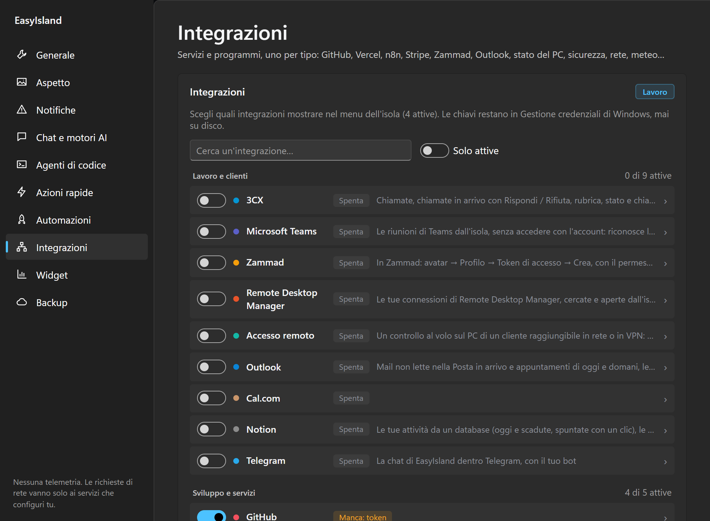
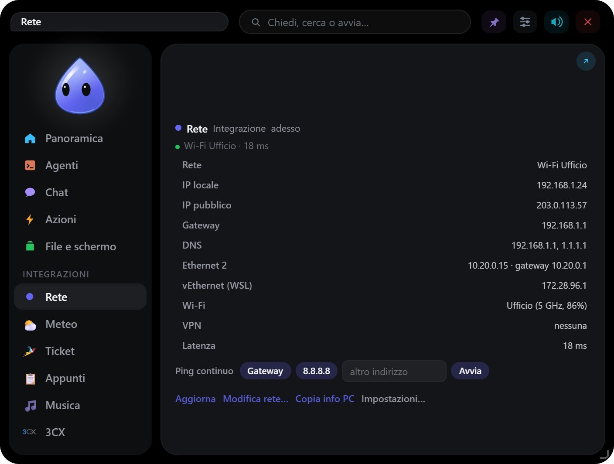
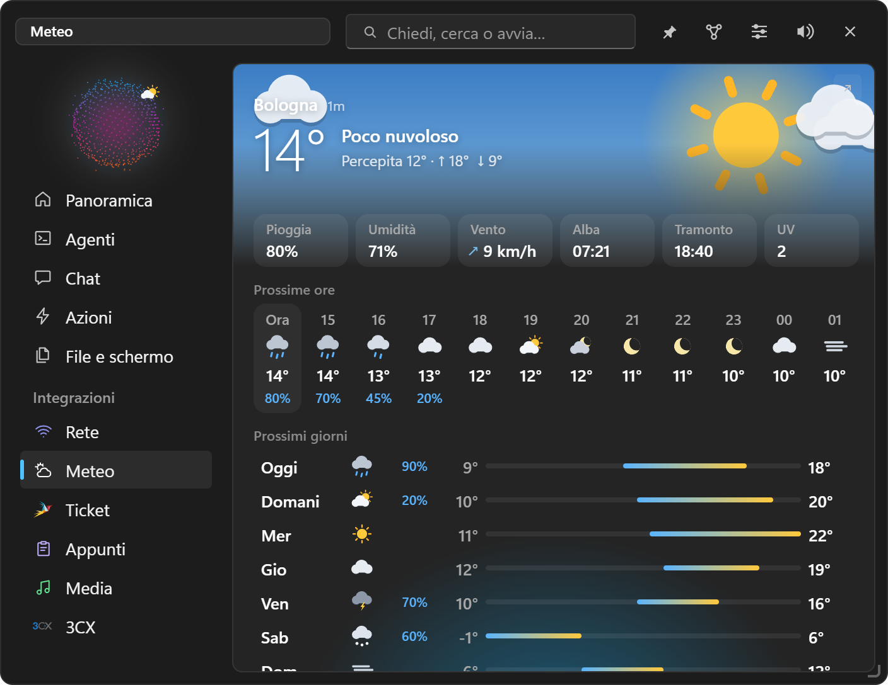
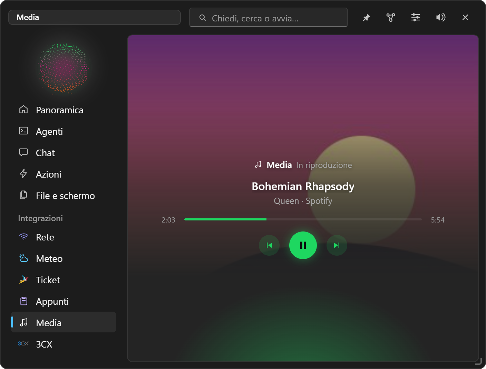

Collegare i servizi
Integrazioni
Tutte le integrazioni, cosa mostrano e cosa serve per collegarle.
Impostazioni → Integrazioni le accende, una per tipo. Compaiono nel menu dell'isola e nei riquadri della Panoramica. Chiavi, token e indirizzi stanno in Gestione credenziali di Windows.

#Come si gestiscono
- Sono divise in gruppi (Lavoro e clienti, Sviluppo e servizi, Questo PC), con una ricerca e Solo attive.
- Ogni riga: interruttore, colore, nome e stato (Spenta, Attiva, o Manca: chiave quando serve una credenziale). Un clic apre spiegazione, campi, opzioni, icona e colore.
- Nel menu ogni integrazione mostra il suo logo o un'emoji, e un colore che il personaggio indossa quando la sua scheda è aperta.
- Si riordinano trascinandole nel menu o nella Panoramica; Blocca lo spostamento e Ripristina l'ordine in fondo.
- Quali sono accese dipende dal profilo.
- Quando un controllo passa da OK a problema, la voce prende un pallino, il personaggio suona e l'isola si fa vedere (secondo le notifiche del profilo). I controlli diventano tre volte più radi a batteria e si fermano in pausa.
#Lavoro e clienti
| Integrazione | Cosa fa | Serve |
|---|---|---|
| 3CX | Telefono nel PC, chiamate, rubrica, team, chat, segreteria | Centralino 3CX V20 |
| Zammad | Ticket assegnati a te, non assegnati e in escalation; avviso per un ticket nuovo da assegnare | Indirizzo e token (permesso ticket.agent) |
| Outlook | Mail non lette, appuntamenti di oggi e domani, avviso prima di una riunione | Outlook classico aperto, o l'account Microsoft |
| Teams | Comandi della riunione, Partecipa dal link copiato, stato | Teams |
| Notion | Attività con viste, note, pagine, mini Notion nell'isola, avvisi | Token di un'integrazione interna |
| Telegram | La chat nel tuo bot, compiti, permessi, file | Un bot creato con @BotFather |
| Accesso remoto | Collegamento temporaneo WinRM o SSH al PC di un cliente | Indirizzo, utente, password (solo in memoria) |
| Remote Desktop Manager | Cerca e apre le connessioni di RDM | RDM installato |
| Cal.com | Prenotazioni | Chiave API |
#Sviluppo e servizi
| Integrazione | Cosa fa | Serve |
|---|---|---|
| GitHub | Attività dei repository, pull request | Token |
| Vercel | Deploy | Token |
| Stripe | Pagamenti | Chiave in sola lettura |
| Resend | Email inviate | Chiave API |
| n8n | Esecuzioni dei flussi, errori | Indirizzo e chiave API |
| Consumo Claude | Limiti del piano (5 ore, settimana, Opus) e token di Claude Code | Claude Code con l'accesso fatto |
#Questo PC
| Integrazione | Cosa mostra |
|---|---|
| Stato del PC | Spazio sul disco di sistema (arancione sotto il 10 %, rosso sotto il 5 %), memoria, batteria, da quanto è acceso, riavvio richiesto. Copia info PC: nome, utente, Windows, modello, numero di serie, IP e MAC pronti per un ticket |
| Sicurezza | Antivirus, età delle firme, ultima scansione, firewall, minacce rilevate |
| Rete | Wi-Fi o cavo, IP locale e pubblico, gateway, DNS, tutte le schede, VPN, latenza; avviso se internet non risponde. Ping continuo verso gateway o un indirizzo. Modifica rete…: DHCP o IP manuale e DNS per scheda (con la conferma di amministratore di Windows) |
| Meteo | Il cielo di adesso animato, umidità, vento, alba e tramonto, 12 ore e 7 giorni, avviso pioggia. Open-Meteo, gratis e senza chiave |
| Appunti | Cronologia di testi e immagini, solo in memoria (vedi File e schermo) |
| Media | Cosa è in riproduzione in qualsiasi app (Spotify, browser…), con copertina e comandi |



#Le tue integrazioni
Oltre a queste, puoi crearne di tue a parole in chat: moduli, cruscotti, collegamenti alle API dei tuoi servizi. Vedi Integrazioni personali. Per controlli ripetuti (un sito per cliente, un server per sede) ci sono i Widget.